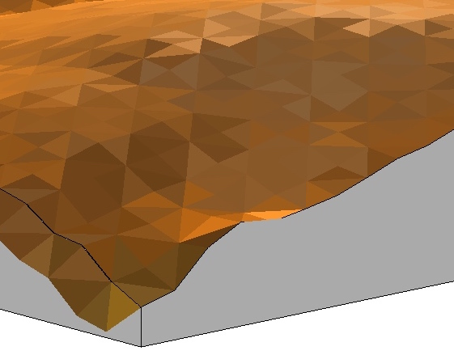

Geomorphometry II:
Basic topographic analysis
Helena Mitasova
Outline (learning objectives)
- summary parameters: volumes, surface areas
- first and second order point parameters
- methods for slope, aspect and curvatures using polynomial and spline approximation
- computing parameters from noisy data, level of detail
- combining parameters to map landforms and terrain features
Terrain surface parameters
- Derived from discrete representation of $z=f(x,y)xi$
- Summary parameters quantify property for entire surface or its subregion: volume, surface area, fractal dimension, roughness
- Point geometry parameters quantify geometry at each point of the surface: gradient, curvatures
- Cumulative flow parameters
- Process-based parameters
Volume estimation
- Volume - integral approximated as sum of cuboids:
$$
V=∑dx.dy.dz = dx.dy ∑ dz
$$
- where $dx.dy$ is grid cell area, $dz = z_0-z_i$, is cell value difference, $z_0$ is constant, plane or curved surface
- computed as sum of grid cell values - elevations
- can be applied as global or zonal

Surface area
- sum of 3D triangle areas
- depends on the direction of the diagonal: minimum and maximum surface - see the code
- alternative: 8 triangles connecting grid center with neighboring ones

Point topographic parameters
- Measure geometric properties at any point of the topographic surface
- steepness, orientation, and shape.
- derivation based on differential geometry
Elevation surface gradient
For the surface represented by a continuous bivariate function
$$
z = f(x,y)
$$
we can compute a vector:
$$
\nabla z = ({\partial z \over \partial x}, {\partial z \over \partial y}) = (f_x,f_y)
$$
where $f_x$ and $f_y$ are first order partial derivatives of $f(x,y)$
leading to a vector field that represents the maximum rate of change in elevation
and points in the direction of steepest increase in slope
What is partial derivative and a
Formal definition
Gradient vector field
$$
\nabla z = (f_x,f_y)
$$
show numbers
Learn more
Find more examples in the 2014 lecture, MEA592-004/GIS595-002:
Multidimensional Geospatial Modeling material and GIS595 UAS course